1抓取的本质
我们已有运动学、规划与控制三类基础工具，但都缺一个输入：「末端该去哪？」——答案藏在「抓取」里。课件的定义（p6）：
抓取（Grasping）：通过在一组接触点上施加力和扭矩，以期望的方式约束物体运动的过程。
抓取合成（Grasp Synthesis）：对夹爪位姿或关节配置的高维搜索/优化问题。
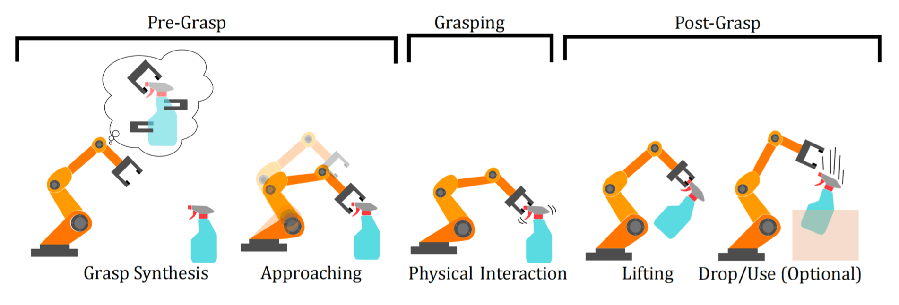
Pre-Grasp＝抓取前；Grasping＝抓取中；Post-Grasp＝抓取后。Grasp Synthesis＝抓取合成；Approaching＝接近；Physical Interaction＝物理交互；Lifting＝抬起；Drop/Use (Optional)＝放下／使用（可选）。从左向右阅读完整抓取序列。
两种操作模式（笔记）：
- 抓握式操作（Prehensile）：通过完全约束物体自由度实现精确控制——「拿起来」；
- 非抓握式操作（Non-prehensile）：利用推、滑等接触力学调整物体状态——适合薄片物体或预处理场景。推与滑也可以完成物体操作。
有了抓取，加上第 2-4 章的 IK（把笛卡尔位姿变关节角）、运动规划（找无碰撞路径）、控制（执行），就形成了完整闭环（课件 p5）：视觉给末端位姿 → IK → 规划 → 控制。剩下的核心问题就是：位姿怎么来？
2抓取位姿的自由度
抓取姿势（Grasp Pose）定义手的位置、方向与关节状态（课件 p7）。按自由度分档：
| 档位 | 参数 | 适用场景 |
|---|---|---|
| 4-DoF 抓取 | $(x, y, z, \theta_z)$：位置 + 绕重力轴旋转 | 结构化环境、固定位置（流水线分拣）——「自上而下抓」 |
| 6-DoF 抓取 | $(x, y, z, \theta_x, \theta_y, \theta_z)$：任意方向接近 | 非结构化场景（杂乱堆叠） |
| 手指自由度 | 平行夹爪 1 DoF（开合宽度）；灵巧手示例最多 21 DoF（依结构而定） | 与位姿自由度正交的维度 |
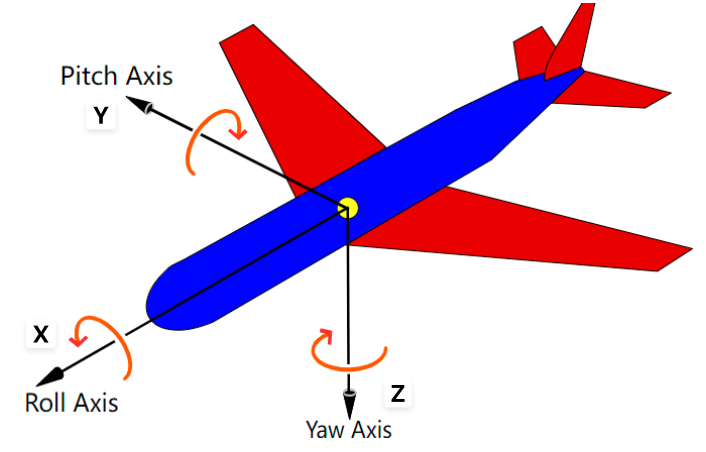
Roll Axis＝滚转轴（图中x轴）；Pitch Axis＝俯仰轴（y轴）；Yaw Axis＝偏航轴（z轴）。这是三个轴的完整示意；4自由度自上而下抓取固定滚转与俯仰，只保留偏航角。

Yaw＝偏航，示例绕图中z轴旋转。动画帮助观察朝向变化；使用欧拉角时仍需明确坐标系与旋转约定。
4-DoF 将搜索空间从 6 维降到 4 维，在适合自上而下抓取的流水线中，可以简化搜索与规划。抓取自由度应与场景中的接近方向相匹配：桌面杯子允许自上而下接近时可采用4-DoF；狭窄环境或侧向接近通常需要更灵活的6-DoF候选。
3开环抓取与闭环抓取
回到第 4 章的开环/闭环概念，抓取也有两个版本：
| 开环抓取 | 闭环抓取 | |
|---|---|---|
| 流程 | 位姿估计 → 抓取 → 结束（视觉只用一次） | 执行中持续用视觉、触觉等反馈调整动作，必要时重试 |
| 比喻 | 观察一次后按计划执行 | 边观察边调整，能否改善取决于反馈质量与控制设计 |
| 代表工作 | D³RoMA（CoRL 2024） | GraspVLA（课件时为 in submission） |
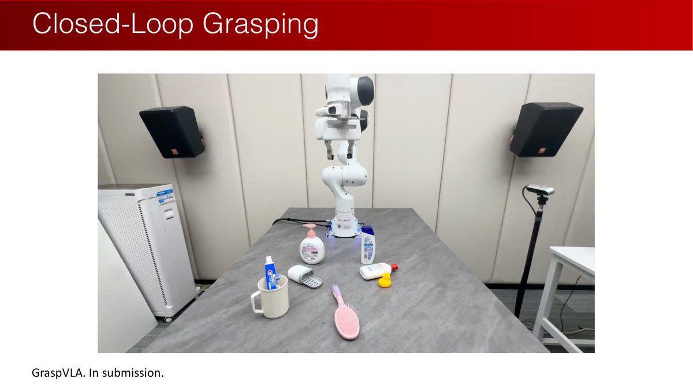
Closed-Loop Grasping＝闭环抓取
示例是GraspVLA
In submission＝原课件制作时处于投稿中。
读图提示：投稿状态是原课程当时的标注。闭环的关键是后续观测会影响动作，不能只凭图片判断算法实现。
开环抓取系统的标准流水线（课件 p11）：视觉感知 → 位姿估计 → 运动规划 → 控制执行。其中「位姿估计」又分两条路线：
- 已知物体：先估物体位姿，再把物体坐标系下标注的抓取位姿变换过去；
- 未知/通用物体：直接预测抓取位姿。
GraspVLA 的首次 arXiv 提交日期为 2025-05-06（来源记录见第 1 章）。开环与闭环描述执行时是否继续使用反馈；视觉伺服与重试可用于纠正误差。评价这些反馈方法时，结合具体任务、传感器与控制条件，记录它们对结果的影响。
对已知物体，位姿估计可以先检查几项观测条件（笔记）：如果 RGB 图像满足① 相机内参已知、② 物体大小已知（消除尺度歧义）、③ 物体无对称性，则有助于消除尺度与对称性歧义；RGB 或点云仍需足够的可见几何信息，遮挡可能使不同位姿难以区分。
这幅照片是透视／尺度歧义的直观例子，没有需要翻译的技术英文。单张图像中的表观大小同时受真实尺寸和相机距离影响。
46D 位姿估计：机器人的「认物」
6D 物体位姿：物体坐标系到相机坐标系的 6D 变换——3 DoF 平移 + 3 DoF 旋转（课件 p13，引用 PoseCNN / RSS 2018）：
$$ \begin{bmatrix} X_C \\ Y_C \\ Z_C \end{bmatrix} = R \begin{bmatrix} X_O \\ Y_O \\ Z_O \end{bmatrix} + t $$
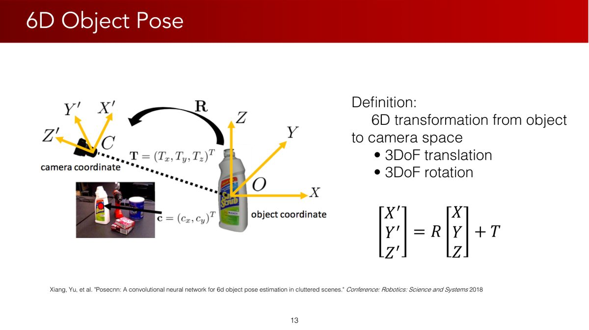
6D Object Pose＝六维物体位姿
定义：从object space（物体坐标空间）到camera space（相机坐标空间）的刚体变换，含3DoF translation（三维平移）与3DoF rotation（三维旋转）
p_C=R p_O+T
图中的camera coordinate＝相机坐标系，object coordinate＝物体坐标系
引用PoseCNN，RSS 2018。
读图提示：R把物体系方向转换到相机系，T是物体原点在相机系的位置；一定先明确变换方向，再做矩阵乘法。
它的应用远超抓取（课件 p14-17）：
- 机器人操作：把 CAD 模型上的标注（如抓取点）转移到相机空间的物体上；位姿追踪提供视觉闭环控制；
- 人机交互理解：感知人与物的交互（HOnnotate）；从人的操作中提取位姿轨迹供模仿学习；
- 增强现实（AR）：视觉引导、E-learning、移动应用娱乐。
课件接着抛出核心问题（p18）：「How to predict a rotation?」——平移可用3个数回归，但也受观测歧义影响；旋转还需要处理其结构约束与表示问题。接下来的两节就是答案的两条路线。
5旋转回归：方法一
旋转回归（Rotation Regression）：对输入信号，用神经网络估计连续旋转变量（笔记）。
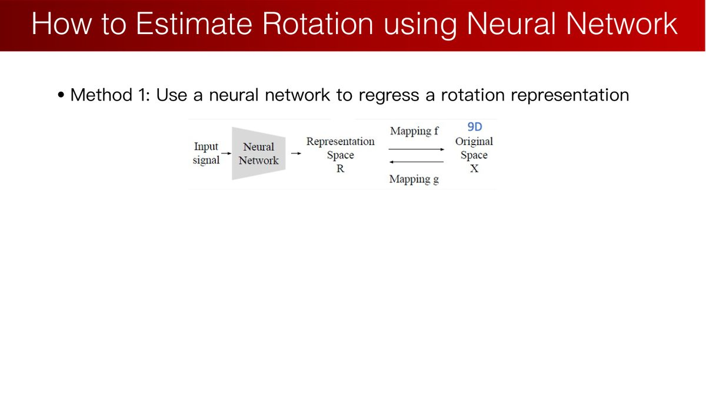
方法一：用神经网络regress a rotation representation（回归一种旋转表示）
Input signal＝输入信号，Neural Network＝神经网络，Representation Space＝表示空间，Original Space＝原旋转空间
Mapping f与Mapping g＝两个空间之间的映射。
读图提示：网络输出参数后要通过解码转换成有效旋转；表示与旋转本身不一定一一对应。
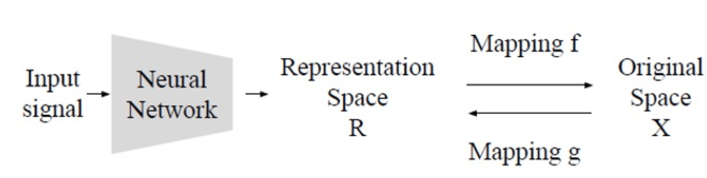
Input signal＝输入信号；Neural Network＝神经网络；Representation Space＝表示空间；Original Space＝原旋转空间；Mapping f/g＝两个空间之间的映射。网络输出参数，再由解码映射得到有效旋转。
为什么这比普通回归难？因为旋转空间是非线性的非欧空间：SO(3) 是一个弯曲的流形，而神经网络输出的是欧几里得空间。直接对编码使用 MSE 时，需要留意标签的连续性：
连续性原则：CNN 应当具有连续性——输入微小变动，输出不应巨变。但如果旋转表示存在「监督信号跳变」（奇点），网络需要拟合相邻输入对应的相距很远的标签，可能出现较大权重或数值不稳定。选定标签的全局不连续性来自表示的拓扑结构。选择表示时先检查这一性质，再用合适的损失与训练方法缓解跳变的影响；全局连续编码需要从表示设计入手。
理想的旋转表示应满足：① 能准确表达旋转；② 旋转的编码连续。预测向量的解码不必一一对应，且要注明非退化输入条件。逐个检视四种候选：
欧拉角：天然不连续
2D 情形最直观：绕轴转 $0$ 和 $2\pi$ 是同一个旋转，但角度表示差了 $2\pi$——在 SO(2) 上连续的一圈，在角度表示上「断了」：
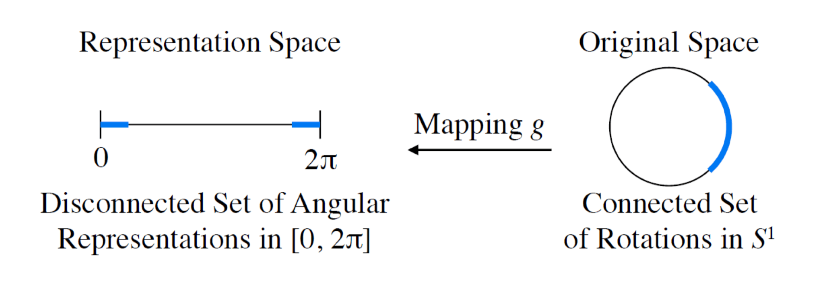
Representation Space＝表示空间；Original Space＝原空间；Disconnected Set of Angular Representations in [0,2π]＝首尾端点分离的角度区间表示；Connected Set of Rotations in S¹＝首尾相连的圆周旋转集合；Mapping g＝映射。图强调主值编码端点分离，而真实旋转连续。
解法思路：引入冗余维度，把低维的不连续提升到高维的连续（如 $\theta \to (x,y)$）——这正是后面 6D/9D 表示的思想源头。
轴角：边界奇异
$\theta = 0$ 时任意轴都表示单位旋转（不唯一）；$\theta = \pi$ 时 $(\mathbf{e}, \pi)$ 与 $(-\mathbf{e}, \pi)$ 相同——同样不连续。
四元数：双重覆盖的两难
$q$ 与 $-q$ 表示同一旋转（第 3 章讲过）。用作监督信号时，网络面对「同一个旋转两个标签」的矛盾。即使约束 $w \geq 0$（上半球），新问题又来了（笔记）：

u是旋转轴，v、v′是旋转前后向量；θ与绕相反轴的2π−θ产生同一旋转。对应到单位四元数时，q与−q表示同一朝向。图中主要是数学符号。
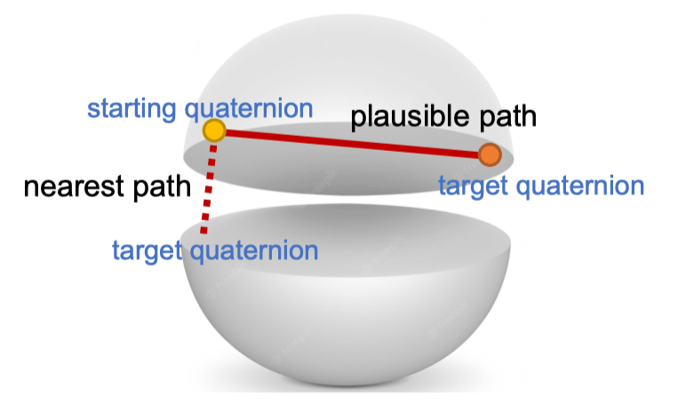
starting quaternion＝起始四元数；target quaternion＝目标四元数；nearest path＝最近路径；plausible path＝另一可选路径。强制选上半球会在边界附近把接近的旋转编码成距离较远的标签。
赤道附近：一个微小旋转可能让 $q$ 从 $w>0$ 跳到 $w<0$，在约束表示上就是跳变。双重覆盖的本质矛盾：要么二义，要么断裂。
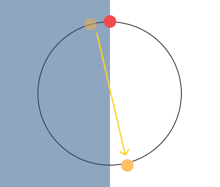
圆周示意用于说明四元数单值选择的边界问题：两个等价标签只选一个时，跨越边界的连续旋转可能产生标签跳变。图中的数学标记不表示新增自由度。
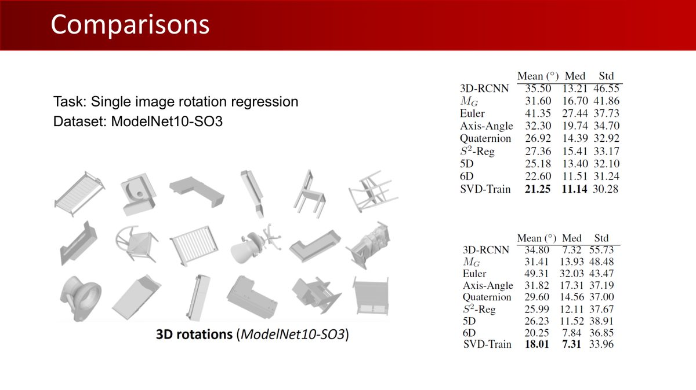
Comparisons＝比较
任务为Single image rotation regression（单张图像旋转回归）
数据集ModelNet10-SO3
表中Mean＝平均误差，Med＝中位误差，Std＝标准差
比较欧拉角、轴角、四元数、5D、6D和SVD等表示。
读图提示：表里的误差越低越好；这是特定任务和设置的实验，不能外推为每个任务上都存在相同排名。图中椅子等物体以不同朝向呈现。
如果只预测增量旋转（单位矩阵附近的小旋转），前述所有表示都可用——在选定合适的局部坐标图后，可避开全局标签断点；如旋转向量或靠近单位四元数的编码均可使用。轴与角分开写时，零角度的轴仍不唯一，因此还需检查所选局部编码的定义。训练速度可在相同实验条件下比较。这正是一些跟踪（tracking）或视觉—语言—动作（VLA）模型的做法：每帧只预测小增量。
66D 与 9D：连续编码与旋转投影
既然低维表示总有奇点，那就回到旋转矩阵本身，但处理掉冗余（课件 p31-34）：
6D 表示：两列 + 格拉姆-施密特
只取旋转矩阵的前两列（6 个数），映射回 SO(3) 时用 Gram-Schmidt 正交化：
$$ f_{GS}\left(\begin{bmatrix} \mathbf{a}_1 & \mathbf{a}_2 \end{bmatrix}\right) = \begin{bmatrix} \mathbf{b}_1 & \mathbf{b}_2 & \mathbf{b}_3 \end{bmatrix}, \qquad \mathbf{b}_1 = N(\mathbf{a}_1),\ \mathbf{b}_2 = N(\mathbf{a}_2 - (\mathbf{b}_1\cdot\mathbf{a}_2)\mathbf{b}_1),\ \mathbf{b}_3 = \mathbf{b}_1 \times \mathbf{b}_2 $$
① 第一列归一化；② 第二列移除平行于第一列的分量再归一化；③ 第三列叉乘得到。归一化要求第一列非零，且第二列去除投影后仍非零。遇到零向量或两列共线时，先处理退化输入。
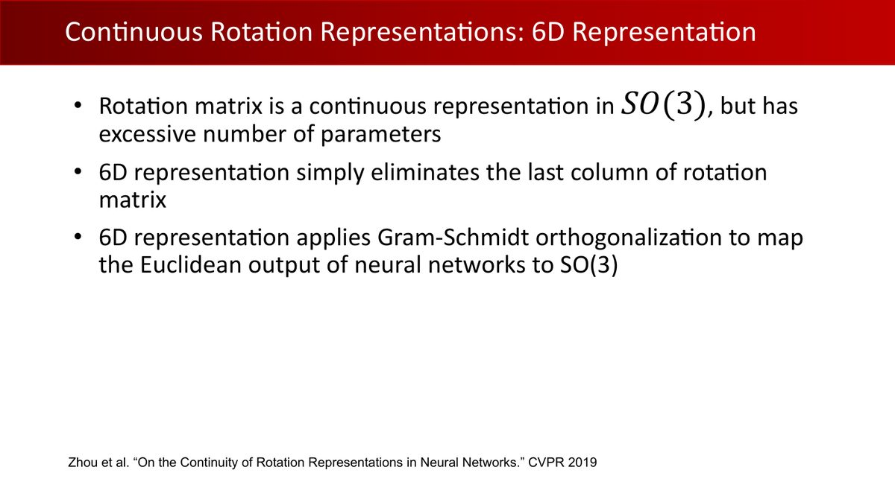
旋转矩阵是连续表示但参数冗余
6D表示删除矩阵最后一列
用Gram-Schmidt orthogonalization（格拉姆—施密特正交化）将网络欧氏输出转换到SO(3)
引用Zhou等CVPR 2019。
读图提示：编码是取有效旋转矩阵的前两列；解码只在第一列非零、两列不共线的输入域上定义。
6D解码对两列依次处理，第一列先归一化、第二列再去掉投影，第三列由叉乘构造；这种结构会影响梯度与数值敏感性。这种顺序结构与L2损失兼容。比较6D与9D时，应使用相同的数据、损失和评价条件。第一列接近零或两列近共线时，需检查退化与训练稳定性。
9D 表示：完整矩阵 + SVD 正交化
直接输出完整 3×3 矩阵，用 SVD 映射到 SO(3)（Levinson et al. 的分析）：
$$ \hat{R} = U\begin{bmatrix} 1 & 0 & 0 \\ 0 & 1 & 0 \\ 0 & 0 & \det(UV^{\top}) \end{bmatrix}V^{\top} $$
设网络输出 $A=U\Sigma V^\top$，其中 $U,V$ 为正交矩阵，$\Sigma$ 含奇异值。将奇异值替换为1并对可能的反射作行列式修正，得到距离 $A$ 最近的合法旋转。原始奇异值与1相差较大时，也可按这一过程求解。CNN Friendly意为适合神经网络欧氏输出的设计；在最近旋转解唯一的非退化域上投影连续，退化输入可能使解不唯一或梯度不稳定。代价是输出9个数。
6D/9D 为旋转回归提供了两种输出设计。阅读网络时，查看它实际输出的表示及解码步骤；再结合数据和几何先验，比较直接回归与对应点拟合的取舍。旋转表示与 Procrustes 为理解这些设计提供了基础。
7Rotation Fitting：方法二
方法一需要选择旋转表示并处理其几何约束；方法二换个思路：网络不输出旋转，输出「对应关系」，再用解析算法拟合旋转（课件 p37）：
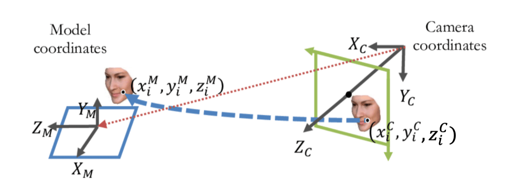
Model coordinates＝模型坐标；Camera coordinates＝相机坐标；上标M和C分别表示模型系与相机系。红色对应线连接同一表面点的两种坐标，蓝色虚线表示观察几何关系。
- 对物体表面每个像素，预测其在物体 CAD 模型上的 3D 坐标（object coordinates）；
- 基于相机坐标 ↔ 模型坐标的对应关系，拟合旋转矩阵。
有深度信息且相机内参已知：3D-3D 对应（$(u,v,d) \to (x^M,y^M,z^M)$）；无深度：2D-3D 对应。本节经典方法通常使用已知物体模型和物体坐标监督；2D-3D对应可用PnP求解，3D-3D对应可用刚体拟合求解。选择求解器时，先确认对应点是在二维图像中，还是在三维坐标系中。
7.1 正交 Procrustes 问题：3D-3D 拟合的解析解
给定两组对应的 3D 点集 $\mathbf{M}$（相机系）与 $\mathbf{N}$（模型系），求最优旋转：
$$ \hat{\mathbf{A}} = \arg\min_{\mathbf{A}} \|\mathbf{M} - \mathbf{NA}^{\top}\|_F^2 \quad \text{s.t.} \quad \mathbf{A}^{\top}\mathbf{A} = \mathbf{I} $$
将 Frobenius 范数展开为迹形式后，$\mathrm{tr}(\mathbf{M}^\top\mathbf{M})$ 与 $\mathrm{tr}(\mathbf{N}^\top\mathbf{N})$ 与 $\mathbf{A}$ 无关，目标等价于最大化 $\mathrm{tr}(\mathbf{M}^\top\mathbf{NA}^\top)$。对 $\mathbf{M}^\top\mathbf{N} = \mathbf{UDV}^\top$ 做 SVD，则迹 = $\sum_i [(\mathbf{AV})^\top\mathbf{U}]_{ii}d_i$；由于 $(\mathbf{AV})^\top\mathbf{U}$ 是正交矩阵，对角元绝对值 ≤ 1，全取 1 时达到最大，即：
$$ \hat{\mathbf{A}} = \mathbf{UV}^{\top} $$
正交矩阵可能是反射（$\det = -1$，改变手性）。此时修正为 $\hat{\mathbf{A}} = \mathbf{U}\,\mathrm{diag}(1,1,\det(UV^\top))\,\mathbf{V}^{\top}$——翻转「关联性最弱的方向」（最小奇异值对应方向），对整体对齐的影响最小。
7.2 联合求解 R 与 t
三步走（课件 p43；假定点对已知且几何不退化）：① 中心化：两簇点各自减去质心；② 对中心化点集解带约束的 Procrustes 得 $\hat{R}$；③ 平移 $\hat{t} = \overline{\mathbf{M}} - \hat{R}\overline{\mathbf{N}}$。
$M,N\in\mathbb{R}^{n\times3}$每行是一个点，$N$是源（模型）坐标、$M$是目标（相机）坐标；中心化后对 $M_c^\top N_c$ 做SVD。$\|\cdot\|_F$是所有元素平方和的平方根，$\mathrm{tr}$是对角元素之和。计算后用 $M\approx N R^\top+t^\top$逐点核对，确认 $R$和 $R^\top$的变换方向。相同点、共线点或对称几何可能使姿态无法唯一确定。
7.3 RANSAC：SVD 怕离群点
Procrustes 给出固定对应关系下的最小二乘解。离群点（Outlier）会因较大的平方残差影响整体拟合，下面的直线拟合图展示了这一现象：
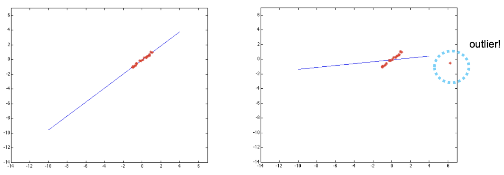
outlier＝离群点。左图点接近同一直线；右图增加远离主体的点后，最小二乘直线被拉偏；这是平方残差对大误差敏感的示例。
解法是 RANSAC（随机抽样一致）：随机抽最小样本组生成假设（刚体3D-3D对应至少需要3对不共线点）→ 用其余点投票（距离小于阈值算内点）→ 内点最多的假设胜出 → 用全部内点重估。循环可以并行化（所有假设同时提出）。
方法一让网络直接输出旋转，结构直接，但需处理编码、损失与物体对称性。方法二让网络输出稠密对应关系，利用局部几何规律，再由解析算法拟合旋转；对称性、遮挡和预测错误仍会影响对应点，因此需要 CAD 模型和 RANSAC 等后处理。比较直接回归与对应拟合时，固定数据、模型先验和误差指标，观察各自的误差来源与后处理成本。
8Instance-Level 与 Category-Level
8.1 Instance-Level：认「这一个」物体
实例级位姿估计：小集合的已知实例，每个实例有自己的 CAD 模型（课件 p55，引用 PoseCNN）：
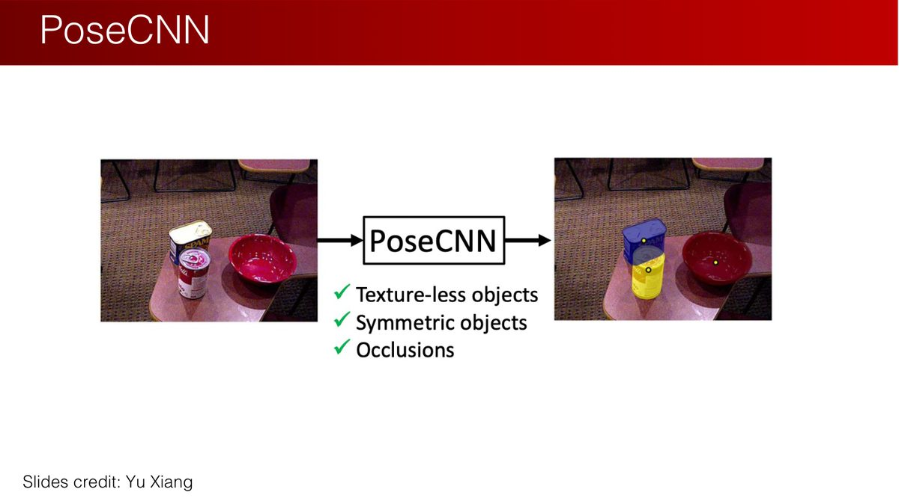
PoseCNN把输入图像转换为物体分割与位姿
Texture-less objects＝无纹理物体，Symmetric objects＝对称物体，Occlusions＝遮挡
图源Yu Xiang。
读图提示：这些是系统处理的困难类型，并非对任意无纹理或严重遮挡都有无条件保证。
- 平移：预测物体中心 + 距离；旋转：回归四元数（正是方法一）；
- 数据集：LINEMOD（无纹理物体、杂波场景），有 GT CAD 模型，适合受控环境；
- 局限：实例特定、不能泛化到新物体、需要 CAD 模型。
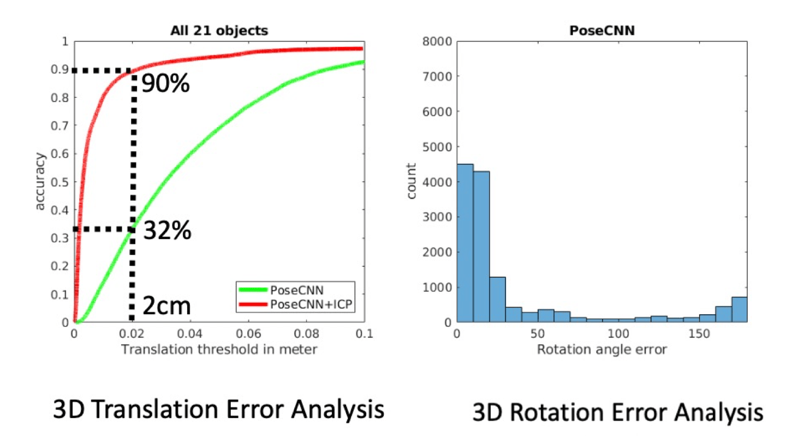
All 21 objects＝全部21个物体；accuracy＝准确率；Translation threshold in meter＝平移误差阈值（米）；3D Translation Error Analysis＝三维平移误差分析；Rotation angle error＝旋转角误差；count＝计数；3D Rotation Error Analysis＝三维旋转误差分析。左图红线PoseCNN+ICP与绿线PoseCNN在2cm阈值处为90%与32%；右图是旋转误差直方图。
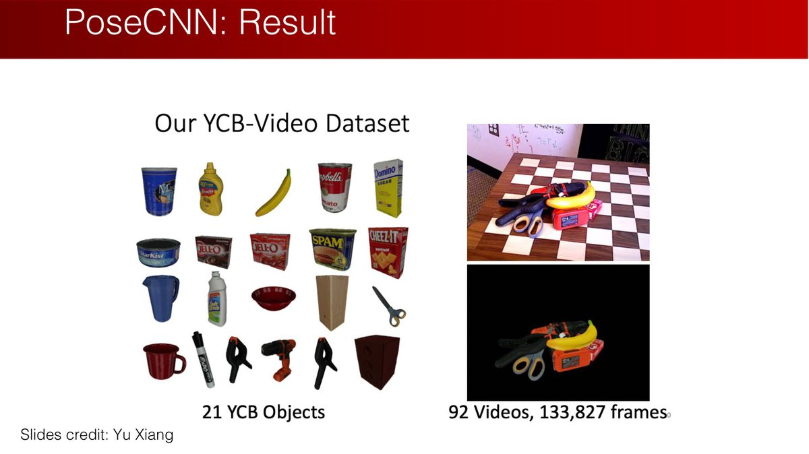
Our YCB-Video Dataset＝YCB-Video数据集
21 YCB Objects＝21个YCB物体
92 Videos, 133,827 frames＝92段视频、133827帧
图源Yu Xiang。
读图提示：本页展示YCB-Video，不是LINEMOD。数据集名、样本数与评估指标应分别对应原图。
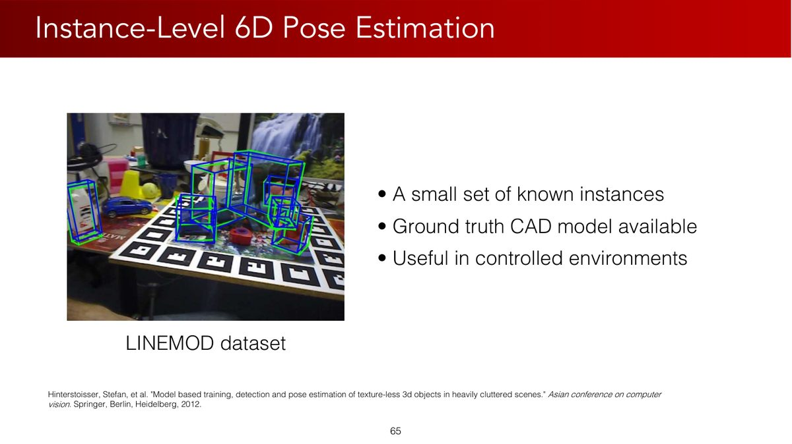
一小组已知实例
Ground truth CAD model available＝有真实CAD模型
Useful in controlled environments＝适用于受控环境
LINEMOD dataset＝LINEMOD数据集
引用Hinterstoisser等ACCV 2012。
读图提示：本页才是LINEMOD。CAD模型提供固定实例的几何先验和坐标参考。
8.2 Category-Level：认「这一类」物体
类别级位姿估计：同一类别的物体（如各种茶杯）共享几何结构，可对训练类别内的新实例估计位姿。遇到训练之外的类别时，需要另外验证泛化能力。代表性工作是 NOCS（Normalized Object Coordinate Space，CVPR 2019 Oral）——作者正是本课程主讲人王鹤老师：
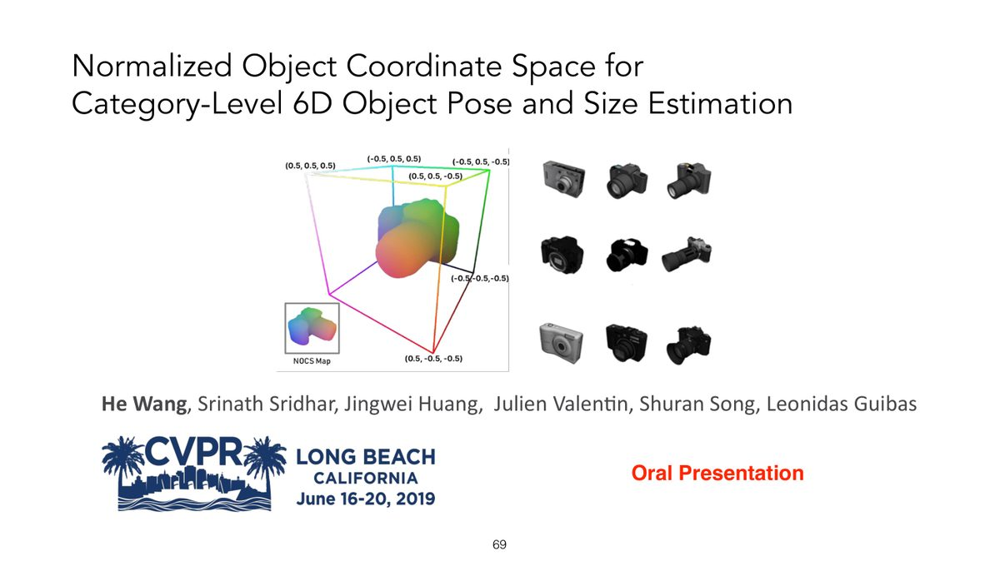
Normalized Object Coordinate Space for Category-Level 6D Object Pose and Size Estimation＝用于类别级六维位姿与尺寸估计的归一化物体坐标空间
作者He Wang、Srinath Sridhar、Jingwei Huang、Julien Valentin、Shuran Song、Leonidas Guibas
CVPR 2019，Oral Presentation＝口头报告。
读图提示：作者及论文名称保留以便检索。NOCS是统一参考空间，而非具体物体的完整CAD模型。
核心思想是归一化坐标（课件 p70）：同类物体按类别约定统一朝向，以包围盒中心定义原点，再按包围盒对角线做统一比例缩放，装进规范立方体——规范坐标提供类别内可学习的共同参考。这也回答了平移歧义：类别级需要估计尺度；RGB-D 可利用深度同时拟合尺度与位姿，否则还是「鸽子为什么这么大」的问题。
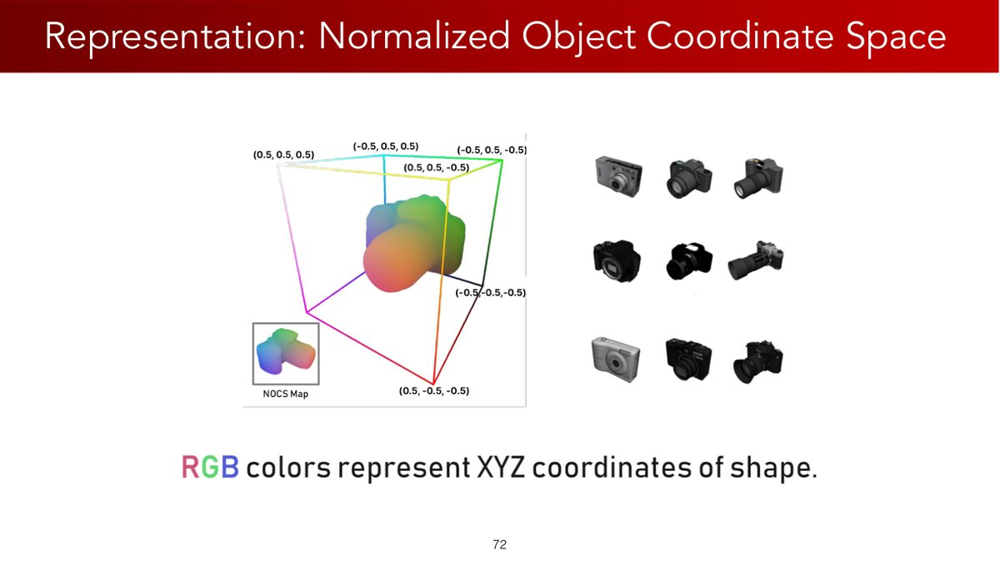
Representation: Normalized Object Coordinate Space＝表示：归一化物体坐标空间
RGB colors represent XYZ coordinates of shape＝红绿蓝颜色分别表示形状的x、y、z坐标
NOCS Map＝归一化坐标图。
读图提示：颜色是坐标编码，不是物体材质颜色；相同规范位置可在不同实例中使用相同编码。
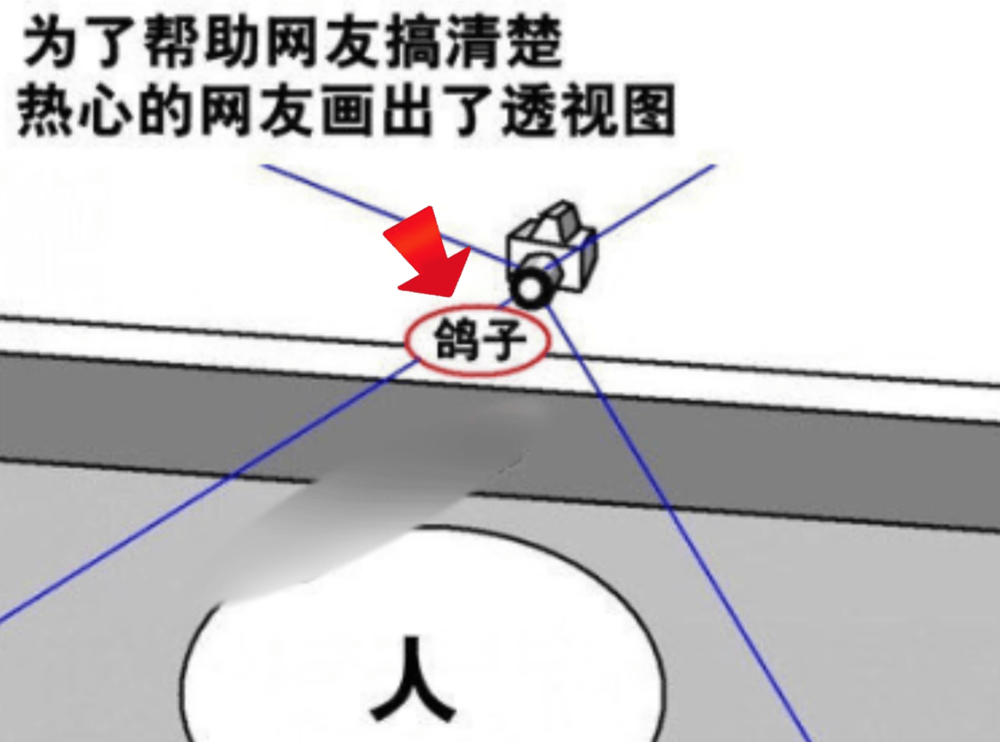
图中的中文透视解释说明相机视线上近小与远大可能产生相似投影；该图没有技术英文。恢复度量尺寸和距离需要额外尺度或深度信息。
9本章小结
| 核心概念 | 一句话解释 |
|---|---|
| 抓取合成 | 在抓取位姿/关节配置的高维空间中搜索可行解 |
| 4-DoF vs 6-DoF | 结构化场景省两个自由度；杂乱场景需要任意朝向 |
| 开环 / 闭环抓取 | 视觉只用于预先估计 / 执行中根据新观测调整动作 |
| 旋转回归的连续性 | 旋转编码宜连续；解码可多对一，须处理退化输入 |
| 6D / 9D 表示 | 矩阵前两列 + GS 正交化 / 完整矩阵 + SVD 正交化，编码连续，解码需处理退化输入 |
| 正交 Procrustes | 3D-3D 对应拟合旋转的闭式解 $A=UV^\top$（+ det 修正） |
| RANSAC | 最小样本生成假设 + 内点投票，抵御离群点 |
| Instance / Category | 认「这一个」（PoseCNN/LINEMOD）/ 认「这一类」（NOCS） |
第 6 章继续深挖：ICP 点云配准、类别级位姿估计的完整方法、以及抓取的力学基础（Force/Form Closure 与摩擦锥）——「位姿有了，怎么抓才稳」。
10动手实践：作业 2 · 电钻抓取
本章配套北大原版作业 2：抓取一个已知物体（电钻 power drill）。给定物体坐标系下的抓取位姿，你的任务是估计物体位姿，把抓取位姿变换到机器人坐标系——本章全部知识点的一次完整实战。
10.1 任务总览
| 任务 | 自学检查 | 内容 | 对应本章 |
|---|---|---|---|
| Part I | 比较平移／旋转误差 | EstPoseNet：PointNet 直接估计平移+旋转 | §5 方法一 |
| Part II | 检查对应拟合残差 | 预测物体坐标（NOCS），拟合位姿 | §7 方法二 |
| Part III | 核对坐标变换 | transform_grasp_pose：位姿变换到机器人系 | 第 2 章齐次变换 |
| Bonus | 同一验证集对照 | RANSAC（numpy/torch 实现），比较离群点条件下的误差与成功率 | §7.3 |
代码位置：Homeworks/02-Pose-Estimation/（题目 PDF 在 Handout/，公开作者实现位于 Handin/；练习要求与评分以 Handout/ 为准）。
10.2 环境搭建
conda create -n hw2 python=3.10
conda activate hw2
conda install conda-forge::roboticstoolbox-python==1.0.3
# GPU 版（按需改 cuda 版本）
conda install pytorch==2.5.1 torchvision==0.20.1 torchaudio==2.5.1 pytorch-cuda=12.4 -c pytorch -c nvidia
# CPU 版
conda install pytorch==2.5.1 torchvision==0.20.1 torchaudio==2.5.1 cpuonly -c pytorch
pip install tqdm h5py wandb plotly pygments ikpy transforms3d pyyaml opencv-python pillow matplotlib trimesh dm_control
pip install numpy==1.26.4 scipy==1.11.4 sympy==1.13.1先用小规模数据检查训练流程，再按GPU、样本量、超参数与停止准则记录训练耗时；纯CPU可用于读代码和小规模检查。mjpython 仅 Mac 需要。数据文件较大（含预训练 checkpoint），建议直接用仓库 Handin/ 里的权重作对照。
10.3 Part I：直接估计
完成 src/model/est_pose.py 中的 EstPoseNet（PointNet backbone）：__init__ 初始化模块、forward 训练时算 loss、est 输出平移与旋转矩阵。
题目提示：「考虑用什么旋转表示和损失函数，并在 est 里把表示转成旋转矩阵」。一种可行的设计思路：平移用 MSE 直接回归（欧几里得空间没问题）；旋转用 6D 表示 + Gram-Schmidt（§6）或四元数 + 归一化损失。若选择欧拉角或四元数配合 MSE，结合 §5 检查标签跳变与四元数归一化。
运行 python train.py --model_type=est_pose --exp_name=my_exp（可加 --device=cuda）；测试 python test.py --checkpoint=... --mode=val。自学检查：同时记录平移误差（m）与旋转误差（rad），并与同一验证集的基线比较；课程达标阈值以原题目为准。
10.4 Part II：拟合
另一种可比较的设计：网络输出每个物体点的物体坐标（NOCS，类似分割分支），再用对应关系拟合位姿——正是 §7 的路线：3D-3D 对应 → 中心化 → 带约束 Procrustes（SVD + det 修正）→ 求 $t$。
Procrustes 只需 10 行 numpy/torch：中心化 → U, S, Vh = np.linalg.svd(Mc.T @ Nc) → R = U @ np.diag([1,1,np.linalg.det(U@Vh)]) @ Vh → t = M.mean(0) - R @ N.mean(0)。这里 M,N 均为 (n,3)：N 是源点，M 是对应目标点，Mc,Nc 为各自中心化后的矩阵；验证 M ≈ (R @ N.T).T + t。点云有噪声时拟合会被离群点带偏——这正是 Bonus 里 RANSAC的用武之地。
10.5 Part III：抓取位姿变换
实现 src/utils/transform_grasp_pose：把物体坐标系下的抓取位姿变换到机器人坐标系——第 2 章齐次变换的直接应用：$T_{robot}^{grasp} = T_{robot}^{obj} \cdot T_{obj}^{grasp}$。这里约定 $T_A^B$把B系坐标变到A系；若网络输出物体到相机的变换，还需相机外参：$T_{robot}^{obj}=T_{robot}^{camera}T_{camera}^{obj}$。
评估：python eval.py --checkpoint=... --mode=val。plotly 显示估计位姿（--vis=1），MuJoCo 显示抓取过程（--headless=0）。自学检查：记录样本数、成功判定和成功率；课程阈值及分值以原题目为准。
总用时估计 1-2 天：Part I 半天（读代码框架 + 设计旋转表示）、Part II 半天（Procrustes + RANSAC）、Part III 1 小时（矩阵变换）。建议顺序：先跑通 Part III（最简单，验证环境），再 Part I，最后 Part II。遇到 NaN loss，先查四元数/6D 表示的归一化。
附A术语表
| 术语 | 解释 |
|---|---|
| 抓取（Grasping） | 通过接触点施加力/扭矩约束物体运动的过程 |
| 抓取合成（Grasp Synthesis） | 对夹爪位姿/关节配置的高维搜索或优化问题 |
| 抓握式 / 非抓握式 | 完全约束物体自由度 / 用推、滑等接触力学调整物体 |
| 4-DoF / 6-DoF 抓取 | 位置+绕重力轴旋转 / 位置+任意朝向 |
| 6D 物体位姿 | 物体到相机的 6 自由度变换（3 平移 + 3 旋转） |
| 旋转回归 | 用神经网络估计连续旋转变量的回归任务 |
| 奇点（Singularity） | 表示无定义或行为不佳的点（歧义、不可微） |
| 6D 表示 | 旋转矩阵前两列 + Gram-Schmidt 正交化的连续表示 |
| 9D 表示 | 完整 3×3 输出 + SVD 正交化的连续表示 |
| 增量旋转预测 | 只预测单位矩阵附近的小旋转，选合适局部坐标后可避开全局标签断点 |
| 正交 Procrustes 问题 | 两组对应点间最优旋转的矩阵逼近问题，SVD 解析解 $A=UV^\top$ |
| RANSAC | 随机抽样一致：最小样本假设 + 内点投票，抗离群点 |
| PnP | Perspective-n-Point：2D-3D 对应 + 相机内参求位姿 |
| Instance-Level | 对已知具体实例（有 CAD 模型）的位姿估计 |
| Category-Level | 对同类别未见实例的位姿与尺寸估计（如 NOCS） |
| NOCS | 归一化物体坐标空间：类别内统一到 1×1×1 box（王鹤 CVPR 2019） |
附B课件 71 页完整索引
原版 Lecture 5 课件共 71 页（GitHub 原文件）。下表逐页列出内容及在本教程中的位置：
| 页码 | 页面内容 | 在教程中的位置 |
|---|---|---|
| p1 | 封面：Lecture 5 - Vision and Grasping I | 封面区 |
| p2 | Logistics 页 | §10（作业背景） |
| p3 | 作业 1 截止提醒（03/22） | §10（背景） |
| p4 | 主题页：抓取 | §1 开头 |
| p5 | 从机器人学基础到抓取：流水线闭环 | §1 |
| p6 | 什么是抓取（定义 + Grasp Synthesis） | §1 |
| p7 | 抓取位姿：4-DoF / 6-DoF / 手指自由度 | §2 |
| p8 | 开环抓取：D³RoMA（CoRL 2024） | §3 |
| p9 | 闭环抓取：GraspVLA（in submission） | §3 + 更新框 |
| p10 | 闭环抓取（示意图） | §3 |
| p11 | 开环抓取的两条路径（已知/未知物体） | §3 |
| p12 | 主题页：6D 位姿估计 | §4 开头 |
| p13 | 6D 物体位姿定义（PoseCNN 引用） | §4 |
| p14 | 应用：机器人操作（CAD 标注转移、视觉闭环） | §4 |
| p15 | 应用：基于位姿的抓取（CoRL 2018） | §4 |
| p16 | 应用：人机交互理解（HOnnotate 2020） | §4 |
| p17 | 应用：增强现实（AR 综述 2016） | §4 |
| p18 | 6D 位姿定义回顾 + 核心问题「如何预测旋转」 | §4-5 衔接 |
| p19 | 主题页：旋转回归 | §5 开头 |
| p20 | 2D/3D 旋转与 SO(3) 定义回顾 | §5 |
| p21 | 旋转表示盘点：矩阵 9 数 vs 欧拉角/轴角/四元数 | §5 |
| p22 | 欧拉角（图源 Hao Su） | §5 |
| p23 | 轴角与罗德里格斯公式（回顾） | §5 |
| p24 | 四元数（图源 Hao Su） | §5 |
| p25 | 方法一：回归旋转表示 | §5 |
| p26 | 四元数回归的历史与现状（CVPR'19 引用） | §5 |
| p27 | 奇点与不连续性的数学定义 | §5 |
| p28 | 欧拉角的不连续性（0 vs 2π） | §5 |
| p29 | 轴角的边界问题（θ=0、θ=π） | §5 |
| p30 | 四元数双重覆盖与半球的矛盾 | §5 |
| p31 | 连续表示：6D 表示思想 | §6 |
| p32 | 6D 表示定义：矩阵前两列 | §6 |
| p33 | Gram-Schmidt 映射到旋转矩阵 | §6 |
| p34 | 9D 表示与 SVD 正交化（Levinson 引用） | §6 |
| p35 | 对比实验：ModelNet10-SO3 单图旋转回归 | §5 |
| p36 | 主题页：Rotation Fitting | §7 开头 |
| p37 | 方法二：预测物体坐标再求解旋转 | §7 |
| p38 | 正交 Procrustes 问题定义 | §7.1 |
| p39 | 解析解：$A = UV^\top$ | §7.1 |
| p40-41 | 证明（Read by Yourself） | §7.1（证明思路） |
| p42 | 约束 Procrustes：det 修正 | §7.1（红框） |
| p43 | 联合求解 R 与 T：中心化三步法 | §7.2 |
| p44 | 离群点问题：SVD 敏感，需要 RANSAC | §7.3 |
| p45 | RANSAC 思想（Read by Yourself） | §7.3 |
| p46-52 | RANSAC 直线拟合示例（Read by Yourself） | §7.3 |
| p53 | PnP 算法：2D-3D 对应 + 内参求位姿 | §7（附录 A 术语） |
| p54 | 主题页：实例级位姿估计 | §8.1 开头 |
| p55 | 实例级定义：小集合已知实例（PoseCNN） | §8.1 |
| p56-57 | PoseCNN 网络结构（图源 Yu Xiang） | §8.1 |
| p58 | PoseCNN 平移估计 | §8.1 |
| p59 | PoseCNN 旋转估计：回归四元数 | §8.1 |
| p60-62 | PoseCNN 结果与可视化 | §8.1 |
| p63 | LINEMOD 数据集介绍 | §8.1 |
| p64 | 实例级方法的局限 | §8.1 |
| p65 | 主题页：类别级位姿估计 | §8.2 开头 |
| p66 | （无文字配图页） | §8.2 |
| p67 | NOCS（王鹤 et al., CVPR 2019 Oral） | §8.2 |
| p68 | 类别级位姿与尺寸估计：无需 CAD 模型 | §8.2 |
| p69 | 挑战：类别内形状差异 | §8.2 |
| p70 | 表示：归一化物体坐标空间（1×1×1 box） | §8.2 |
| p71 | 结尾页：下集预告 Vision and Grasping II | 页脚（下一章预告） |
附C参考资源
- 课程官网：pku-epic.github.io/Intro2EAI_2025
- 本教程素材来源仓库：zhuozhiyongde/Embodied-Artificial-Intelligence-2025Spring-PKU
- 本章课件：
Slides/Lecture05_03_17.pdf（71 页） - 本章笔记原文：
Notes/05-Vision-and-Grasping-I.md - 本章作业：
Homeworks/02-Pose-Estimation/（题目 PDF、代码框架与参考答案）
连续编码的原始分析参见Zhou等：旋转表示连续性；SVD投影参见Levinson等：深度旋转估计中的SVD分析。
延伸阅读
- Xiang et al., PoseCNN, RSS 2018：实例级 6D 位姿估计经典
- Wang et al., NOCS, CVPR 2019 Oral：类别级位姿与尺寸估计（王鹤老师）
- Zhou et al., On the Continuity of Rotation Representations, CVPR 2019：6D 表示原始论文
- Newbury et al., Deep Learning Approaches to Grasp Synthesis（综述）：抓取合成的全景
- FoundationPose（CVPR 2024）与 SAM-6D（CVPR 2024）：相关位姿估计方法；具体输入与实验设置见原论文
自测：检查坐标和旋转
- 六维旋转表示和六维物体位姿为什么不是同一概念？
- 网络输出两列几乎平行时，Gram-Schmidt会出现什么问题？
- 为什么SVD拟合之后还需要检查det(R)？
- 预测物体到相机的位姿后，怎样获得机器人坐标中的抓取目标？
参考思路
前者仅编码朝向，后者含位置；两列近共线使第二列垂直分量近零，归一化敏感；正交矩阵可能是反射；需用相机外参和物体内抓取标注按坐标链相乘。